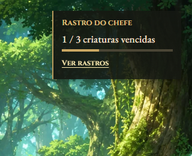
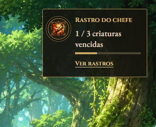
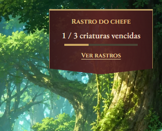

Três estilos para a área do chefe
A moldura de pergaminho sai. Todos mostram progresso real, acesso bloqueado durante outro combate e identificação do chefe quando a luta começa.
APLICADO AO JOGO · RECOMENDADORastro discreto

Placa escura, filete de cor e barra fina. Deixa a floresta aparecer e dá ao chefe um objetivo claro.
Ver na tela inteiraALTERNATIVA VISUALSelo de caçada

Emblema e borda contida. Tem mais identidade de caçada, mas ocupa mais espaço e atrai mais atenção.
Ver na tela inteiraALTERNATIVA VISUALEstandarte

Tecido vermelho e ponta inferior. É o mais dramático; eu reservaria esse peso visual para eventos especiais.
Ver na tela inteira Cinzel 650 nos nomes e comandos; EB Garamond nos textos de leitura. A versão aplicada usa Rastro discreto. As outras duas aparências estão apenas nesta comparação. Nenhum valor de dano ou regra de desbloqueio foi alterado.
Registro da implementação